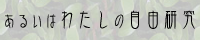

Bolero's website
About
管理人
Bolero MURAKAMI (E-Mail)
サイトコンテンツ
-
◇ プログラミング (吉里吉里拡張ライブラリ, C++ ライブラリ)
◇ 小説
プログラミング
吉里吉里
-
KTLWiki (吉里吉里用ライブラリ KTL)
-
配布物 (KTL 関連) (TJSスクリプト, DLL, 外部DLL) [2015.06.01 更新]
C++
-
 Sprout C++ Library Wiki (C++ ライブラリ Sprout)
Sprout C++ Library Wiki (C++ ライブラリ Sprout)
Braincunt
-
Braincunt (自作難解プログラミング言語 Braincunt)
-
配布物 (Braincunt 関連) (アプリケーション, サンプルソース) [2012.10.16 更新]
小説
連載中
-
あるいはわたしの自由研究 | 《自サイト掲載版》 [2012.09.23 更新]
著作権等
著作権
-
当サイトで公開されるテキスト、制作物等の著作権はとくに記載がない場合 Bolero MURAKAMI が保持します。
他の著作者によるものを引用、再配布している場合は著作権表示に従います。
免責
-
万一当サイトの利用によって損害等が生じたとしても管理人は一切責任を負いません。